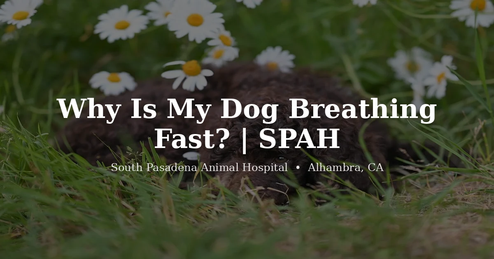

October 14, 2026 · 7 min read
Why Is My Dog Breathing Fast?

Dogs breathe fast for all sorts of perfectly good reasons, so most of the time this isn't a crisis. A dog that just chased a ball around the yard on a warm Alhambra afternoon is going to be breathing hard, and that's exactly how it's supposed to work. The trick is learning to separate that normal, cool-down breathing from the kind that shows up when a dog is just lying there, because fast breathing at rest is one of the more useful early warnings we get in dogs.
Let's draw that line clearly.
First, what's normal
A resting or sleeping dog takes somewhere around 15 to 35 breaths a minute. Panting is separate. That open-mouthed, tongue-out breathing is a cooling system, not a measure of distress, and a hot or recently active dog pants to shed heat the way we sweat. After exercise, in the heat, when excited, or after a brief scare, a dog breathes fast and then settles within minutes once it rests and cools. Puppies run a bit faster than adults. If that's the pattern you're seeing, it's just a dog being a dog.
The home check worth knowing: sleeping breathing rate
Here's a simple tool we wish more dog owners used. While your dog is really asleep, not dreaming-twitching, just resting, count the breaths in 30 seconds (one rise and fall of the chest is one breath) and double it. A healthy sleeping dog sits comfortably under about 35. A sleeping dog that's consistently breathing faster than that can be showing an early sign of fluid building up around the lungs, which is one of the ways heart disease first reveals itself. It's a number worth knowing, and a great one to report to us.
The reasons we take seriously
When fast breathing shows up at rest, or won't settle, or travels with other signs, we start looking harder.
Pain or fever
Dogs often breathe faster when they hurt or are running a fever. A dog that's breathing quickly and also subdued, reluctant to move, or off its food may be telling you something aches.
Heart and lung disease
Heart disease, pneumonia, a collapsing trachea, and fluid in or around the lungs can all drive up the breathing rate. Sometimes there's a cough along with it; sometimes the fast breathing is the main clue. These don't resolve on their own and need a real workup.
Anemia and other internal problems
When the blood can't carry enough oxygen, as in significant anemia, the body compensates by breathing faster. It's one more reason that unexplained fast breathing deserves an exam rather than a guess.
The emergencies. Go now
Some breathing is a true emergency. Get to a vet immediately if your dog is clearly struggling to breathe, has gums that look blue, grey, or pale, is breathing with the belly heaving or the neck stretched out to pull in air, or simply can't settle and looks anxious about breathing. One more to know, especially in large, deep-chested breeds: a suddenly swollen, hard belly with fast breathing and repeated unproductive retching can signal bloat (GDV), which is immediately life-threatening. For any of these, seek veterinary care right away. Your regular vet during the day, or an emergency hospital after hours.
When to get it checked
Reach out if your dog:
- Has a sleeping breathing rate consistently over about 35 breaths a minute
- Is breathing fast at rest without a clear reason like heat or exercise
- Is coughing, or breathing fast along with low energy or not eating
- Seems to be in pain. Subdued, hunched, reluctant to move
And treat labored breathing, pale or blue gums, or the bloat picture above as an immediate emergency. We see dogs at our dog vet in Alhambra, and a breathing change is always worth a call. Our guide to the signs your dog needs a vet covers more, and our pricing page explains what an exam involves.
Frequently Asked Questions
What is a normal breathing rate for a dog?
A resting or sleeping dog takes about 15 to 35 breaths a minute (panting doesn't count. It's a cooling behavior). Count breaths while your dog sleeps; one rise and fall is one breath. A sleeping dog consistently over about 35 is worth a vet's attention, as it can be an early sign of heart or lung trouble.
Is it normal for dogs to breathe fast?
Often, yes. Dogs breathe fast and pant to cool down after exercise, in heat, and when excited or briefly stressed, and puppies breathe faster than adults. That settles within minutes once they rest and cool. Fast breathing at rest, or that won't settle, is the kind to look into.
Why is my dog breathing fast while sleeping or resting?
That's the most useful warning sign, because it can be an early indicator of heart disease or fluid in or around the lungs. If your sleeping dog's rate is consistently elevated, especially over about 35, have it checked promptly.
When is fast breathing in a dog an emergency?
Seek care immediately, including an emergency hospital after hours, if your dog is struggling to breathe, has blue, grey, or pale gums, is breathing with the belly heaving or neck stretched out, won't settle, or is a deep-chested dog with a suddenly swollen, hard belly and unproductive retching (bloat/GDV). These are life-threatening.